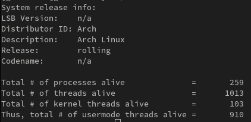
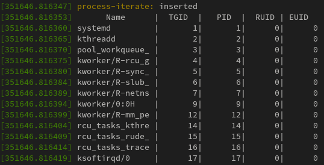

PROCESS AND THREADS ON LINUX KERNEL
Knowledge required
System call
The basic of Linux Kernel Module
Interrupts
Understand the process and interrupts context
The proccess in kernels normally have a some levels, from least priority to most priority, then the most priority (0) are execute first than another level (1,2,3...).
The modern processors execute code at different levels of privilege, for example, the x86 offer four levels of privilege, with ring 0 being the most privileged and 3 bring the least.
Realistically though, modern operating systems have only two levels of privilege (a privileged level and an unprivileged). The unprivileged level is a process that the user send a syscall for kernel execute a process, and the privileged process is a process that is created by a interrupts requests.
The proccess EVERY have a one thread or more. If one process exists, then the one thread or more exists. The main thread is usually the main() function. A process that isn't multi-thread, have only one thread: The T0 thread, or main thread.
Well... I explanit this with more details.
When the user land issuer a system call, it switches to kernel mode and execute the kernel code.
Yes, there is no kernel or kernel thread executing code on its behalf, insteed, the thread issuing the system call, switch to kernel mode and itself executes kernel code. Think about it, the kernel every is executed within the context of a user space process or thread - we call this the proccess context. A significant portion of the kernel execute by this way, including a large portion of the code of device drivers.
Well, how can kernel code execute? When a hardware interrupt fires, the CPU control unit stop the current task, save the current state of task and immediately run the code of the interrupt handler. Now we say that the kernel code being executed in interrupt context
So, every kernel code is executed in one of two contexts:
Process context - When the user land thread make a system call to kernel. The kernel run the task that the thread need with kernel privileges.
Interrupt context - When the hardware issue a interrupt request. The CPU stop the current task, save the current context and execute the interrupt handler.
The image below, show us the conceptual view:

The VAS process
All addressable memory of the process is a BOX. This "box" then is called VAS (Virtual Address Space).
A Important 'rule' is: LOOKING OUTSIDE THE BOX IS DISALLOWED.
Features:
* Isolation: each process has your VAS, then the process has a isolation from another process.
* Safe: How look for outside the box is disallowed, we don't see the data of another process.
* Performance: How the VAS is bit of memory, when the process need found any data, the memory that the process need traverse is smaller than the total memory size.
The process VAS is split into homogeneous memory regions called segments or mapping. Every linux process has at least the following mapping or segment:
Code segment - have a executable code of program. In this memory is storage the binary of program.
Data segment - have a value of static and global data variable. This segment is split into three distinct segments:
__Initialized data segment - The pre-initialized global/static variables are storage here.
__Unitialized data segment - The uninitialized global/static variables are storage here.
__Heap segment - The memory for allocation and freeing are storage here. But this is also not entirely true, because, the memory allocation that is bigger than 128KB get their memory from a separate 'mapping' in the VAS process.
Libraries - All libraris that a process dynamically links into are mapped into the process VAS here.
Stack - A region of memory that uses the stack for to implement a high-level languages function-calling mechanism, and, in effect, holds the thread's execution context. Every time that the function is called, one region of this segment is allocated. In this segment is storage the local variables that is include in high-level function context, your address to call this function and your value return propagation.
The image below, show us the conceptual view:

Organization of process and threads
In UNIX like operating systems, everyting is a process, if it's not a process, it's a file.
The threads share all process resources, including the user VAS (except for the stack), open files, signal dispositions, paging tables and so on.
The next key point is: we require one stack per thread per privilege level supported by the CPU.
On modern operating systems, such as Linux, we support two CPU privilege levels:
1) User mode (unprivileged): This stack is in play when the thread executes user-mode code paths.
2) Kernel mode (privileged): This stack is in play when the thread switches to kernel mode (via system call) and executes kernel code patths.
Well, I will put a bash script for download in this link!
This script I get from the Linux Kernel Programming book by Kaiwan N. Billimoria., which this text was inspired by.
I run, this bash scripts, and this is my result in my native Arch Linux x86_64

The code of kernel have a data struct to repsentation a thread. When the kernel is created, the metadata of the thread is storage in this struct: task_struct. This struct can find in include/linux/sched.h.
Firstly, recall that the task struct is essentially the 'root' data structure of the process of thread, then it holds all attributes of the task. This is a large data struct. How is saing by Linux Kernel Programming book, the x86_64 for 6.1 kernel have a 9,728 bytes.
We will see any fields, and I put a brief explanation about this. Don't forget to go to the sched.h file and see the task_struct struct.
struct thread_info thread_info; //Important flags and status bits
void *stack; //The location of the kernel-mode stack
struct mm_struct *mm; //memory management info
pid_t pid; //task PID and TGID values
char comm[TASK_COMM_LEN]; //task name
struct files_struct *files; //ptr to the 'open files' ds
struct thread_struct thread; //task hardware context detail
Okay, now you have a better idea of the task struct and your member, how do you can access it and varios members??
ACCESSING THE TASK STRUCT
When I run the ./countem.sh script, I found the total of 1013 threads alive on my system. This implies that there will be a total of 1013 task structure objects in the kernel memory.
They need to be organized in a way that the kernel can easily access them as and when required. Thus, all the task structure objects in kernel memory are chained up on a circular doubly linked list called task list.
But, how I can find the current task struct that is running on CPU? This is a non-trivial task. The kernel developers have evolved a way to guarantee you can find the particular task structre representing the thread currently running the kernel code. It's achieved via a macro called current.
The implementation of the current macro is very architecture specific. For example, on some RISC architecure with many generical-purpose registers, a register is dedicated to holding the value of current. Including the linux/sched.h header is required to include the definition of current in your code:
#include <linux/sched.h>
current->pid, current->comm
How we see before, the kernel code execute in two contexts:
1) Process context
2) Interrupt context
The kernel code runs the process in interrupt context at any given point in time. But, why is important to be able to determine the context kernel or driver code's running in? Well, because the process in interrupt context don't can 'sleep'.
A task is sleeping when have a switch context, for example: Think in one task running in a specific CPU in process context. If this CPU received a interrupt request, the previous task going to 'sleep' and the process in interrupt context is execute where the previous task wait the process interrupt context finish your task.
The process in interrupt context don't sleep, because this should finish your task without another interrupts.
Now that we know why, here's how you can easily determine why the context your kernel code is currently executing in:
#include <linux/preempt.h>
in_task()
It return a boolean: True if your code is running in process context, where it's - usually - safe to sleep; returning False implies you are in some kind of interrupt context where it is never safe to sleep.
Working with the task structure via current
Now, we write a simple kernel module to show any information about the context that this process is running.
We make the show_ctx() function that use the current macro to access a few members of the task structure and display their values. This functions is invoked from both init as well as the exit method.
#include <linux/init.h>
#include <linux/module.h>
#include <linux/kernel.h>
#include <linux/sched.h> ///current()
#include <linux/preempt.h> ///in_task()
#include <linux/cred.h> ///current_{e}{u,g}id()
#include <linux/uidgid.h> ///{from,make}_kuid()
#define MOD_NAME "process"
MODULE_AUTHOR("Guilherme Giacomo Simoes");
MODULE_DESCRIPTION("The code for get process information");
MODULE_LICENSE("Dual MIT/GPL");
static void show_ctx(char *nm)
{
unsigned const int uuid = from_kuid(&init_user_ns, current_uid());
unsigned const int euid = from_kuid(&init_user_ns, current_euid());
pr_info("\n");
if (in_task()) {
pr_info("%s: in process context ::\n"
"PID : %6d\n"
"TGID %6d\n"
"UID %6u\n"
"EUID %6u (%s root)\n"
"state :%c\n"
"name %s\n"
"current (ptr to our process context's task_struct) :\n"
" 0x%pK (0x%px)\n"
"stack start : 0x%pK (0x%pX)\n",
current->comm,
task_pid_nr(current),
task_tgid_nr(current),
uuid,
euid,
(!euid ? "have" :"don't have"),
task_state_to_char(current),
current->comm,
current,
current,
current->stack,
current->stack);
}
else {
pr_alert("%s: in interrupt context [should not happen here!]\n", nm);
}
}
static int __init current_init(void)
{
pr_info("%s: inserted\n", MOD_NAME);
pr_info(" sizeof(struct task_struct) = %zd\n", sizeof(struct task_struct));
show_ctx(MOD_NAME);
return 0;
}
static void __exit current_exit(void)
{
show_ctx(MOD_NAME);
pr_info("%s: removed\n", MOD_NAME);
}
module_init(current_init);
module_exit(current_exit);
Itegrating over the kernel's task lists
You can easily iteract from each task running in system using a macro that is provided by include/linux/sched/signal.h header file.
Now, we will write a kernel module to iterate over the kernel task list.
Well, the kernel provide for we a conveniente rountine. The for_each_process macro. This macro allow iterate for each process in task list:
/// include/linux/sched/signal.h
#define for_each_process(p) \
for(p = &init_task ; (p = next_task(p)) != &init_task ; )
Note that the for_each_process() macro is designed to only iterate for the T0 thread (the main thread running in process) and not any another 'childs' threads.
Before we write our kernel module for interate for each process, think about a thing: The process is a global task structure of course. This implies that we should hold a lock when we work with the process. Even if only read. For this, we can use the functions rcu_read_lock() and rcu_read_unlock()
Let's write a small code to iterate for each process:
#include <linux/init.h>
#include <linux/module.h>
#include <linux/kernel.h>
#include <linux/sched.h>
#include <linux/sched/signal.h>
#include <linux/fs.h>
#include <linux/slab.h>
#include <linux/uaccess.h>
#include <linux/kallsyms.h>
#define MOD_NAME "process-iterate"
MODULE_AUTHOR("Guilherme Giacomo Simoes");
MODULE_DESCRIPTION("Small module to show the process iterate");
MODULE_LICENSE("GPL");
static int show_process(void)
{
const int max_len = 128;
char tmp[max_len];
int numread = 0, n = 0, total = 0;
char header[] = " Name | TGID | PID | RUID | EUID";
pr_info("%s\n", &header[0]);
rcu_read_lock();
struct task_struct *p;
for_each_process(p) {
memset(tmp,0, 128);
n = snprintf(tmp, 128, "%-16s|%8d|%8d|%7u|%7u\n", p->comm, p->tgid, p->pid,
__kuid_val(p->cred->uid), __kuid_val(p->cred->euid)
);
numread += n;
pr_info("%s", tmp);
cond_resched();
total++;
}
rcu_read_unlock();
return total;
}
static int __init process_interate_init(void)
{
int total;
pr_info("%s: inserted\n", MOD_NAME);
total = show_process();
pr_info("%s: total of processes on system: %d\n", MOD_NAME, total);
return 0;
}
static void __exit process_interate_exit(void)
{
pr_info("%s: removed\n", MOD_NAME);
}
module_init(process_interate_init);
module_exit(process_interate_exit);
After insert this module, my output of dmesg is:

How differentiating between the process and thread
Well, do you can ask: If the threads and process use a same task_struct and your unique key is the PID (Process IDentifier), how I can differentating between the process and threads if both have the same PID?
Thus, the task_struct have the TGID (Thread Group ID). If your thread is the main thread, then the TGID of thread is equal the PID of process. But if not, then the TGID is differente, but the PID stays the same for all thread of process.
Sources
Linux Kernel Programming book by Kaiwan N. Billimoria.